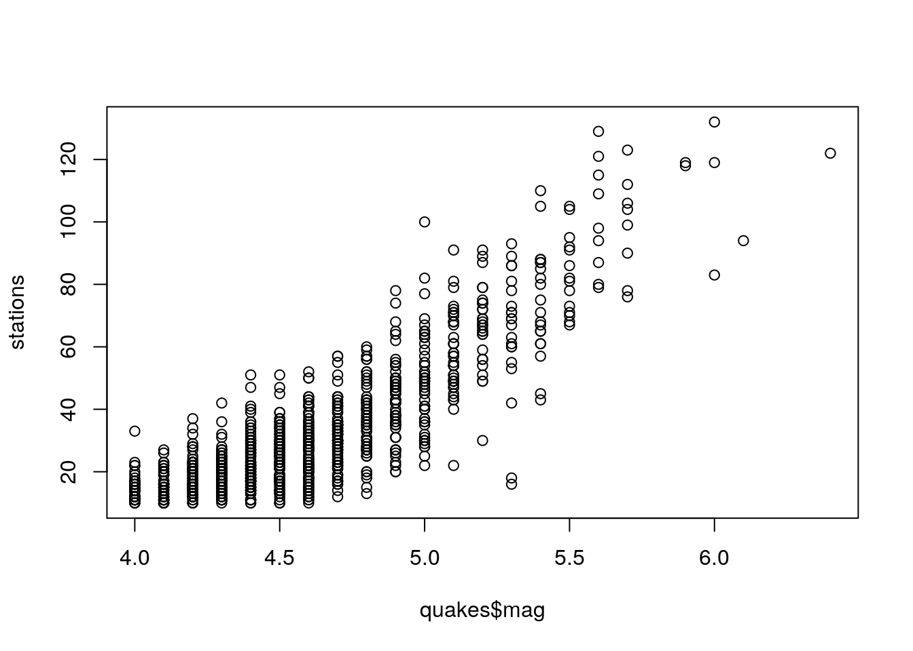

December 4, 2020
My freshmen year at UT Austin I was unsure in the career I wanted to pursue. I started as a Public Health major and was on the Pre-Med track. It was the only career track I had interest at the time. It was until I became involved in the Freshmen Research Initiative program that made me realize what I wanted to pursue.
Spring 2019
I was in the Big Data in Biology cohort and became exposed to Python and RNA-seq data analysis. Through this course I was introduced to important Data Science/Bioinformatics tools such as Pandas, Numpy, packages, etc.
I still remember creating my first pandas dataframe. This is the code that I wrote.
import pandas as pd #doesnt have to be called pd but it is mainly called this
walrus_data = {'name': ['Antje', 'ET', 'Jocko'] ,
'gender': ['Female','Male','Male'],
'weight': [2000,3400,3000]}
walruses = pd.DataFrame(walrus_data) #turns it into a data frame/ the cute chart
walruses.head(2)## gender name weight
## 0 Female Antje 2000
## 1 Male ET 3400walruses.shape #pandas associates every attribute in the data frame## (3, 3)The entire semester picked up and for my final project I performed an RNA-seq data analysis of patients with Parkinson's disease. The goal was to find dyregulated pathways in Parkinson's and operations were done using Python, PANDAS dataframes, and clustermap/heatmaps for aid in statistical testing.
Fall 2019
This semester I pursued an independent research study course as part of my FRI bioinformatics lab. I was assigned a major project with a PI from Dell Medical School named Dr. Mbemba Jabbi. Under this lab for this semester, our goal was to find transcriptomic signatures for mood disorders (bipolar disorder and major depression disorder) within the anterior insula cortex of the brain. I was a key player in the cluster analysis using a weighted-gene package in R and performed a network analysis of large, high-dimensional datasets of patients with depression and biploar disorder. I also took on the challege of identifying the differentially expressed genes and disregulated pathways.
This is the workflow for the project: 
Spring/Summer 2020
During this semester, I part-timed continued the research from the Jabbi lab and began analyzing a different brain region called the subgenual cingulate. I continued performing WGCNA or cluster analysis on this region and began comparing it to the insula portion. I produced enough results for an analysis to begin, however, the research was paused due to the COVID-19 pandemic closing campus.
Fall 2020
This semester was probably my hardest one yet, considering the ongoing COVID-19 pandemic. It was difficult to adapt to do everything 100% in front of a screen with minimum human interaction. All of my research meetings were online and I finished up the subgenual cingulate portion. I picked up another brain region called the dorsal cingulate cortex and performed the same type of weighted-gene cluster analysis.
During this semester, I registered for two other data science related courses. One called Computational Biology and the other was a Data Mining course. Both introduced me more to the data science world and tools. I learned algorithms such a k-means clustering, hierarchal clustering, k-nearest neighbors, bootstrapping, regression, etc. Between the two classes, I learned how to explore data, analyze it, and create algorithms that facilitate data exploration.
These are a few of the topics that I learned from Computational Biology & Bioinformatics: - Data visualization - Data wrangling - Cluster Analysis - Principle Component Analysis (PCA) - Regression - Cross Validation
Here is an example of R code done! A scatter plot of earthquake data was being made.
stations <- quakes$stations
plot(x = quakes$mag, y = stations)
These are a few topic that I learned from the Data Mining course: - Decision Trees - Overfitting and Cross Validation - Naive Bayes - K-nearest neighbors - Neural Networks - Density Based Clustering - Hierarchical Clustering
My Next Steps
My goals continue to be within the data science field and I have multiple plans to achieve. I first plan to continue my research with the Jabbi lab since there are further analysis that my team hopes to achieve such as a Gene Wide Association Study (GWAS) and cluster analysis on another brain region. I also hope to begin publishing these results on a peer reviewed research paper!
I also accepted an internship offer as a Data Engineering Intern at an insurance bank company called USAA. Even though it is not precisely data science, I will still be exploring the worlds and wonders of data, and I could not be anymore excited!